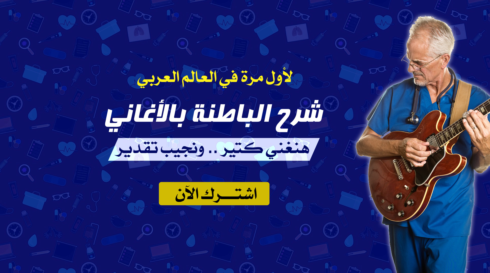

محتويات الكورس
نماذج مجانية
اخبار المايسترو
طرق الدفع
اتصل بنا

هنغني كتير .. ونجيب تقدير
كورس المايسترو
الأكثر مبيعا
اشترك الآن
هنغني كتير .. ونجيب تقدير
كورس المايسترو
الأكثر مبيعا
اشترك الآن
محتويات كورس المايسترو
Rheumatology
1) Scheme - Introduction سكيمة سهلة جدا جدا هتوفر وقتك وجهدك
2) Scheme - Etiology
3) Scheme - Clinical picture - Type of patient & General manifestations
4) Scheme - Clinical picture - Articular manifestations - Distribution
5) Scheme - Clinical picture - Articular manifestations - Description
6) Scheme - Clinical picture - Articular manifestations - Deformity
7) Scheme - Clinical picture - Extra articular manifestations
Scheme - Clinical picture - Diagnostic criteria
9) Scheme - Clinical picture - Variants
10) Scheme - Clinical picture - في تعبان في الشاي Felty's syndrome
11) Scheme - Clinical picture - المنفي ومارد وشلبي CREST syndrome
12) Scheme - Investigations
13) Scheme - Treatment 1
14) Scheme - Treatment 2
15) Scheme - Treatment 3
16) NSAIDs side effects صابرين والأسبرين
17) Gold salts عم دهب وملح الدهب
ملاحظة : فيديوهات السكيم تشمل شرح الموضوعات التالية بالتفصيل Rheumatoid Arthritis (RA)
Systemic Lupus Erythematosus (SLE)
Systemic Sclerosis (SSc)
18- Osteoarthritis شوف تختخ الميكانيكي عمل ايه في الاسطي ارثر
19) Gout - Introduction
20) Gout - Etiology
21) Gout - Clinical picture
22) Gout - Investigations
23) Gout - Differential Diagnosis
24) Gout - مني زكي والمسلوع الكيوت أحمد حلمي
25) Gout - Treatment
26) Gout - Let the Gout Go out الدكتور بطوط والدب هجرس مريض النقرس
27) septic arthritis
28) Pseudogout "أغنية "أندرو كل مناخير البحر
29) Whipple disease الملك آرثر عنده إسهال
30) polymyositis
31) Sjogren syndrome اغنية شاكيرا شكرا
32) Vasculitis definition and classification
33) Vasculitis سكيمة لكل أنواع - Polyarteritis Nodosa - Behcet's disease
34) polyarteritis noجوزة mnemonic
35) giant cell arteritis
36) Takayasu's arteritis
37) Kawasaki disease كاوازاكي الطفل الأحمر والكورة النارية
38) Churg-Strauss syndrome الفيل رص حجرين شيشة واتفرج علي ماتش الكورة
39) Henoch-Schonlein purpura (IgA vasculitis) محمد رمضان على المسرح
40) Osteoporosis أغنية الهشاشة يا باشا
41) Familial Mediterranean fever (FMF)
42) Sarcoidosis البغبغان والخبر السار
43) Low Back Pain بندق واقف علي إيد واحدة
Psychiatry
1- Symtomatology (Disorders of perception)
2- Symtomatology (Disorders of thinking)
3- Organic mental disorders (OMD)
4- Anxiety disorders (introduction)
5- Anxiety disorders (Panic disorder)
6- Anxiety disorders (OCD)
7- Anxiety disorders (GAD)
8- Anxiety disorders (Phobic disorders)
9- Anxiety disorders (PTSD)
10- Anxiety disorders (Treatment)
11- Mood disorders (Clinical picture)
12- Mood disorders (Treatment)
13- Schizophrenia (Types)
14- Schizophrenia (Clinical picture)
15- Schizophrenia (Treatment)
16- Personality disorders (Introduction)
17- Personality disorders (Schizoid)
18- Personality disorders (Paranoid)
19- Personality disorders (Antisocial)
20- Personality disorders (Histrionic)
21- Personality disorders (OCPD)
22- Psychopharmacology (introduction)
23- Psychopharmacology (Antiphsycotics)
24- Psychopharmacology (Antidepressants)
25- Psychopharmacology (Mood stabilizers)
26- Psychopharmacology (Anxiolytics)
27- Electro Convulsive Therapy (ECT)
28- Psychiatric emergencies (Part 1)
29- Psychiatric emergencies (Part 2)
30- Collections
Cardiology
1- Congestive heart failure (definition)
2- Systolic dysfunction (causes)
3- Congestive heart failure (clinical presentation)
4- Song أغنسة السلالم - غناء كونغ فو باندا
5- Congestive heart failure (clinical presentation)
6- Congestive heart failure (investigations)
7- Systolic dysfunction (treatment - medications)
8- Systolic dysfunction (treatment - guidelines updates)
9- ACE inhibitors (site of action - route of administration - complications)
An amazing vidmonic for ACE inhibitors الدكتور شريف يوم استلامه التكليف - خطيبته رمت الدبلة في وشه
10- Systolic dysfunction (treatment - Angioedema)
11- Systolic dysfunction (treatment - diuretics)
12- Systolic dysfunction (treatment - beta blockers)
13- Systolic dysfunction (treatment - spironolactone or eplerenone)
14- Systolic dysfunction (treatment - digitalis)
15- Acute chest pain (causes) سر احتفاظ إنجي بجمجمة صاحبتها في حوض السمك
16- Chronic stable angina (definition - etiology)
17- Chronic stable angina (an amazing vidmonic)
18- Chronic stable angina (triggered by - relieved by - clinical presentation - risk factors)
19- Chronic stable angina (treatment)
20- Myocardial infarction (complications)
21- Pulmonary embolism (risk factors for DVT)
22- Pulmonary embolism (clinical presentation - differential diagnosis)
23- Pulmonary embolism (investigations)
24- Pulmonary embolism (treatment)
25- HTN (definition)
26- HTN (classification)
27- HTN (clinical presentation)
28- HTN (complication)
29- HTN (investigations)
30- HTN (treatment 1)
31- HTN (treatment 2) عمرو دياب بيلعب ضغط
32- HTN song (أغنية مرضي الضغط العالي)
33- HTN (treatment 3) uptodate.com إضافة مهمة من موقع
34- Syncope
35- Cardiomyopathy (clinical presentation)
36- Cardiomyopathy (من غير ما تذاكر كلمة جديدة DCM ازاي تكتب كويس اوي عن الـ)
37- Dilated cardiomyopathy (DCM)
38- Hypertrophic cardiomyopathy (HCM)
39- Restrictive cardiomyopathy (RCM)
40- Cardiomyopathy (investigations - treatment) سكيمة تقدر تكتبها لكل الأنواع
41- Pericarditis (causes) أغنية
42- Infective endocarditis (prophylactic treatment)
43- Infective endocarditis (curative treatment)
44- Rheumatic fever (diagnosis)
45- Atrial fibrillation (treatment)
46- Atrial flutter (management)
Pulmonology
1- Pneumonia (types and etiology)
2- Pneumonia (clinical presentation)
3- Pneumonia (Investigations)
4- Pneumonia (Treatment)
5- Pulmonary tuberculosis (risk factors)
6- Pulmonary tuberculosis (investigations)
7- Pulmonary tuberculosis (treatment part 1)
8- Pulmonary tuberculosis (treatment part 2)
9- Pulmonary tuberculosis (treatment part 3)
10- causes of sudden onset dyspnea (within minutes)
11- Causes of pulmonary hypertension
12- Causes of hemoptysis
13- Acute respiratory distress syndrome (risk factors)
14- Acute respiratory distress syndrome (investigations)
15- Acute respiratory distress syndrome (treatment)
16- Asthma (definition - triggers)
17- Asthma (clinical presentation)
18- Asthma (investigations)
19- Asthma (treatment)
Nephrology
1- Chronic renal failure (CRF)
(introduction - definition - etiology - clinical picture - investigations - treatment)
2- Acute renal failure (ARF)
(introduction - definition - etiology - clinical picture - investigations - treatment)
3- Nephrotic syndrome
(introduction - definition - etiology - clinical picture - investigations - treatment)
4- Nephritic syndrome
(introduction - definition - etiology - clinical picture - investigations - treatment)
5- Proteinuria
6- Metabolic acidosis
7- Electrolytes
8- ABG طريقة سهلة جدا للحل
Hematology
1- Anemia سكيم لكل أنواع الأنيميا
2- Iron deficiency anemia
3- Sickle cell anemia
4- Hemolytic anemias
5- Megaloblastic anemia
6- Autoimmune hemolytic anemia
7- G6PD deficiency
8- Hereditary spherocytosis
9- Paroxysmal nocturnal hemoglobinuria (PNH)
10- Aplastic anemia
11- Acute leukemia
12- AML on top of CML خيبة الأمل راكبة جمل
13- Chronic myeloid leukemia (CML)
Endocrinology
1- General vision تعريف بمحتويات برانش الإندوكراينولوجي
2- Introduction and Scheme سكيمة عامة للإندوكراين
3- Acidophils - أغنية الفيل أسيدو
4- Basophils - أغنية الفيل Baso
5- Polyuria (causes) أغنية و فيديو عامر خان
6- Hypercalcemia (causes) مشهد كارتون بطوط و الأولاد
7- Skin pigmentation (causes) أغنية و قصة الخنزيرة نانسي المليجي اللي بتبرق و بتزعق
8- Acromegaly ماتش المصارعة الحرة
9- Hypopituitarism
10- Diabetes insipidus
11- An amazing vidmonic ماتش ملاكمة بين الارنب أبو سريع و السلحفاة هاشيموتو
12- Hyperthyroidism الأرنب أبو سريع
13- Hypothyroidism السلحفاة هاشيموتو
14- 1ry Hyperaldosteronism (Conn’s syndrome) شالو ألدو جابو شاهين
15- Cushing’s syndrome ماتش كرة القدم
16- Diabetes mellitus - classification 🎵 أغنية داليدا حلوة يا بلدي 🎵
17- Diagnostic criteria of diabetes 🎵 أغنية رائعة هتفكركم بمنتهي السهولة بـ
Infections
1- Scheme سكيمة كورس الإنفكشنز
2- Brucellosis (part 1)
3- Brucellosis (part 2)
4- Typhoid fever (etiology)
5- Typhoid fever (clinical presentation غنوة بداية)
6- Typhoid fever (clinical presentation غنوة الأسبوع الأول)
7- Typhoid fever (clinical presentation غنوة الأسبوع الثاني)
8- Typhoid fever (clinical presentation الاسبوع الثالث والأسبوع الرابع - complications غنوة الـ)
9- Typhoid fever (variants سيناريوهات مختلفة)
10- Typhoid fever (treatment)
11- Malaria
12- Fever of unknown origin (FUO)
13- Collections
14- Mosquito-transmitted viral syndromes سهرة فنية مع نجوم الطرب زيكا مزيكا و دنجي البرنجي و شيكو أغنية
GIT
1- Dysphagia and Odynophagia (definition - causes)
2- constipation (definition) أغنية
3- constipation (etiology - treatment)
4- Peptic ulcer disease (definition - etiology - investigations - treatment)
5- Inflammatory bowel disease (Crohn disease - Ulcerative colitis )
6- causes of cirrhosis
7- Wilson disease
8- Blood supply of the liver
9- Liver functions and clinical presentation of LCF
10- Portal hypertension (causes)
11- Portal hypertension (clinical presentation)
12- Portal hypertension (investigations)
13- Portal hypertension (treatment)
14- Esophageal varices
15- Hepatic encephalopathy (treatment)
16- Ascites
17- Spontaneous bacterial peritonitis (SBP)
18- Liver cirrhosis
19- Acute pancreatitis (etiology)
20- Acute pancreatitis (clinical presentation)
21- Acute pancreatitis (investigations)
22- Acute pancreatitis (treatment)
23- Charcot’s triad
Neurology
1- Causes of seizures (= causes of convulsions - causes of epilepsy)
2- status epilepticus (definition - treatment)
3- Parkinson’s disease (treatment part 1)
4- Parkinson’s disease (treatment part 2)
5- Peripheral neuropathy (types - etiology)
6- Stroke (types - etiology)
7- Stroke (clinical presentation part 1)
8- Stroke (clinical presentation part 2)
9- Stroke (investigations)
10- Stroke (treatment)
11- Dipyridamole mnemonic فريد الديب أومااااال
12- Absolute contraindications to thrombolytic therapy
نماذج مجانية
Acute pancreatitis - etiology 🎵 كورس المايسترو لشرح الباطنة بالأغانى 🎵 مع دكتور برهان
الثعبان العملاق يبلع جماهير الأهلي والزمالك ⚽🐍 CBC scheme شرح كلينيكال باثولوچي بالأغاني
شرح clinical pathology بالأغاني Bilirubin Hood 🎵
شاهد المزيد
اخبار المايسترو
1-
🎵 المايسترو لشرح الباطنة بالأغاني 2024 🎵
وداعا لعذاب المذاكرة
😎
اشترك الآن
2- تلتقون مع الدكتور برهان يوم الخميس الساعة 9 مساء بتوقيت القاهرة علي جروب التليجرام ( لقاء متجدد اسبوعي بإذن الله )
اضغط هنا للاشتراك في جروب التليجرام
3- انتهي الدكتور برهان من شرح كورس clinical pathology بالأغاني 🎵
اضغط هنا لمشاهدة بلاي ليست ڤيديوهات الكورس من البداية وبالترتيب
اشترك الان
طرق الدفع
من داخل مصر
ڤودافون كاش ، أو اتصالات كاش ، أو البريد المصري
من خارج مصر
مصرف الراجحي أو ڤيزا أو ماستركارد أو بايبال أو ويسترن يونيون
للسداد بطرق دفع أخري
تواصل معنا على واتساب 00201097444497
اشترك الآن
اتصل بنا
اضغط هنا للتواصل عبر واتساب 00201097444497
ايميل TVL@Hotmail.com
رسالة خاصة لصفحتنا على فيسبوك